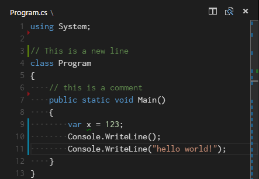
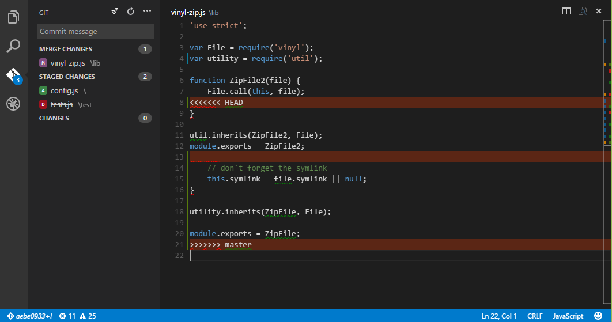

Visual Studio Code has integrated Git support for the most common commands. This makes it an excellent choice to manage your code commits while you develop.
Note: VS Code will leverage your machine’s Git installation, so you need to install Git first before you get these features. Make sure you install at least version
2.0.0.Tip: VS Code will work with any Git repository. If you don’t already have a private hosted Git provider, Visual Studio Team Services is a great free option. Click here to sign-up.
Overview

The Git icon on the left will always indicate an overview of how many changes you currently have in your repository. Clicking it will show you the details of your current repository changes: unstaged, staged and unresolved conflicting merge changes.
Clicking each item will show you in detail the textual changes within each file. Note that for unstaged changes, the editor on the right still lets you edit the file: feel free to use it!
You can also find indicators of the status of your repository in the bottom left corner of VS Code: the current branch, dirty indicators and the number of incoming and outgoing commits of the current branch. You can checkout any branch in your repository by clicking that status indicator and selecting the Git reference from the list.
Tip: You can open VS Code in a sub-directory of a Git repository. VS Code’s Git services will still work as usual, showing all changes within the repository, but file changes outside of the scoped directory are shaded with a tool tip indicating they are located outside the current workspace.
Git Status Bar Actions
There is a Synchronize action in the Status Bar, next to the branch indicator, when the current checked out branch has an upstream branch configured.
If there is no upstream branch configured and the Git repository has remotes set up, the Publish action is enabled. This will let you publish the current branch to a remote.
Commit
Staging and unstaging can be done via contextual actions in the files or by drag-and-drop.
You can type a commit message above the changes and press Ctrl+Enter (Mac: ⌘+Enter) to commit them. If there are any staged changes, only those will be committed, otherwise all changes will be committed.
We’ve found this to be a great workflow. For example, in the previous screenshot, only the config.js file will be included in the commit. A consecutive commit action would commit both vinyl-zip.js and tests.js in a separate commit.
More specific commit actions can be found in the ... menu on the top of the Git view.
Branches and Tags
You can create and checkout branches directly within VS code through Quick Open. Press ⌘P (Windows, Linux Ctrl+P), type git and then press Space. You should see the following:
If you type checkout and press Space again, you will see a dropdown containing all of the branches or tags in the current repository.

The git branch command lets you quickly create a new branch. Just provide the name of your new branch and VS Code will create the branch and switch to it.
Remotes
Given that your repository is connected to some remote and that your checked out branch has an upstream link to a branch in that remote, VS Code offers you useful actions to push, pull and sync that branch (the latter will run a pull command followed by a push command). You can find these actions in the ... menu.
Tip: You should set up a credential helper to avoid getting asked for credentials every time VS Code talks to your Git remotes. If you don’t do this, you may want to consider disabling automatic fetching via the
git.autofetchsetting to reduce the number of prompts you get.
Gutter indicators
If you open a folder that is a Git repository and begin making changes, VS Code will add useful annotations to the gutter and to the overview ruler.
- A red triangle indicates where lines have been deleted
- A green bar indicates new added lines
- A blue bar indicates modified lines

Merge Conflicts

Merge conflicts are recognized by VS Code; we try to provide useful coloring markers to help you with resolving them. Once resolved, stage the conflicting file so you can commit those changes.
Viewing Diffs
Our Git tooling supports viewing of diffs within VS Code.

Tip: You can diff any two files by first right clicking on a file in the Explorer or OPEN EDITORS list and selecting Select for Compare and then right-click on the second file to compare with and select Compare with ‘file_name_you_chose’. Alternatively from the keyboard hit ⇧⌘P (Windows, Linux Ctrl+Shift+P) and select File: Compare Active File With… and you will be presented with a list of recent files.
Git Output Window
You can always peek under the hood to see the Git commands we are using. This is helpful if something strange is happening or if you simply get curious. :)
To open the Git output window, run View > Toggle Output and select Git from the dropdown.
Initialize a Repository
If your workspace isn’t under Git source control, you can easily create a Git repository with the Initialize Git Repository command. When VS Code doesn’t detect an existing Git repository, you will see a This workspace isn’t yet under git source control. message in the Git View and the Initialize Git Repository command will be available.

Running Initialize Git Repository will create the necessary Git repository metadata files and show your workspace files as unstaged changes.
Git patch/diff mode
When you launch VS Code from the command line, you can pass the --wait argument to make the launch command wait until you have closed the new VS Code instance. This can be useful when you configure VS Code as your Git external editor.
Here are the steps to do so:
- Make sure you can run
code --helpfrom the command line and you get help.- if you do not see help, please follow these steps:
- Mac: Select Shell Command: Install ‘Code’ command in path from the Command Palette.
- Windows: Make sure you selected Add to PATH during the installation.
- Linux: Make sure you installed Code via our new .deb or .rpm packages.
- if you do not see help, please follow these steps:
- From the command line, run
git config --global core.editor "code --wait"
Now you can run git config --global -e and use VS Code as editor for configuring Git.

Add the following to your Git configurations to use VS Code as the diff tool:
|
This leverages the --diff option you can pass to VS Code to compare 2 files side by side.
To summarize, here are some examples of where you can use VS Code as the editor:
git rebase HEAD~3 -ido interactive rebase using VS Codegit commituse VS Code for the commit messagegit add -pfollowed by e for interactive addgit difftool <commit>^ <commit>use VS Code as the diff editor for changes
Next Steps
- Intro Video - Git Version Control - An introductory video providing an overview of VS Code Git support.
- Basic Editing - Learn about the powerful VS Code editor.
- Code Navigation - Move quickly through your source code.
- Debugging - This is where VS Code really shines
- Tasks - Running tasks with Gulp, Grunt and Jake. Showing Errors and Warnings
Common Questions
Q: Hey, I initialized my repo but the actions in the ... menu are all grayed out. What gives?
A: To push, pull and sync you need to have a Git origin set up. You can get the required URL from the repo host. Once you have that URL, you simply need to add it to the Git settings by running a couple of command line actions. For example, for Visual Studio Team Services:
|
Q: My team is using Team Foundation version control (TFVC) instead of Git. What should I do?
A: Use the Team Foundation command line tools.
- For cross-platform use: Cross-Platform Command-Line Client Beginner’s Guide
- For Windows: Use Team Foundation version control commands
Q: Why do the Pull, Push and Sync actions never finish?
This usually means there is no credential management configured in Git and you’re not getting credential prompts for some reason.
You can always set up a credential helper in order to pull and push from a remote server without having VS Code prompt for your credentials each time.
Q: How can I sign into Git with my Team Services account which requires multi-factor authentication?
A: There are now Git credential helpers that assist with multi-factor authentication. You can download these from Git Credential Manager for Mac and Linux and Git Credential Manager for Windows.
Q: Using Visual Studio Code, I accidentally initialized a Git repo on a folder with a massive number of files, like my entire hard drive. Now VS Code is too slow to use or hangs. What do I do?
A: First, to get VS Code running again, exit VS Code, then open a command prompt and run
|
which opens VS Code in a new window.
Next, assuming you want to remove the unintended repo initialization, look for the .git sub-folder in the large folder where you unintentionally initialized the repo, and then delete it. Note that .git is a hidden folder, so you might need to show hidden folders to see it. For example, at a command prompt in Windows you can run dir .git /ah to see hidden folders named .git in a specific folder. If you are not sure where you created the initial folder, run dir .git /ah /s at the root folder to see hidden .git folders, including sub-folders.
Q: I have GitHub Desktop installed on my computer but VS Code ignores it.
A: VS Code expects git.exe to be on the operating system’s PATH ($PATH on Mac or Linux). GitHub Desktop installs isolated git binaries and does not automatically add git.exe to PATH.
You can either:
- Add the location of
git.exetoPATHand restart VS Code. - Set the
git.pathsetting to the location ofgit.exe.
On a GitHub Desktop Windows installation, git.exe is usually under C:\Users\USERNAME\AppData\Local\GitHub\PortableGit_COMMITID\ming32\bin. Searching for git.exe under AppData\Local\GitHub should find the binary.
You can also install Git from git-scm and this will not interfere with GitHub Desktop.